Cal Hacks 13.0 · pillmeifyoucan.health · app.pillmeifyoucan.health · github.com/ShadowEsu/pill-calhacks
Pill
One tablet, one curve, one answer: before the clinic pays the supplier.
A box of hobby parts around an Arduino UNO Q drops one tablet from a medicine delivery into a cup of water, records how it dissolves with two light sensors, and compares the curve with known-good tablets. The station says one of three things, and that answer decides whether the supplier gets paid.
Passed the screenNeeds lab testingUnable to verify
The station. UNO Q, three LEDs, two photoresistors, a printed chamber with a lid.
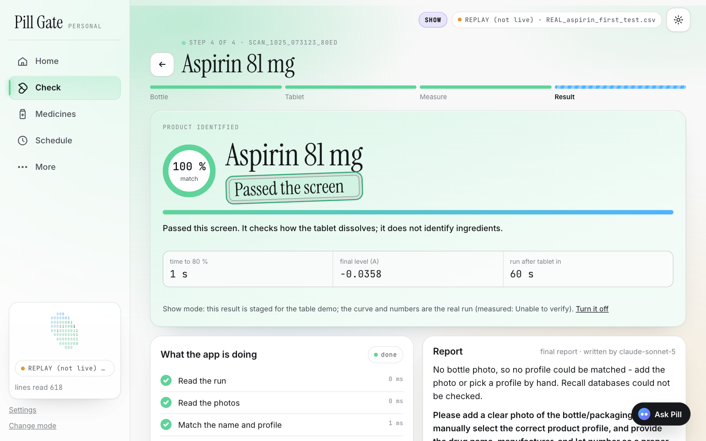
Station app. A finished run: the curve, the band, the one-line answer.
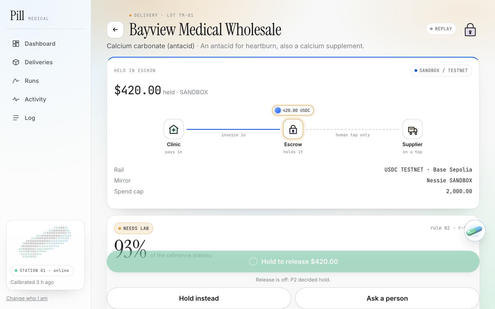
Clinic app. The verdict holds the payment until a pharmacist taps.
1 in 10medical products in low- and middle-income countries are substandard or falsified (WHO, 2017)
60 sfrom Start to one of three answers; a lab dissolution tester costs $20–100k and takes 7–10 days
3 answersnever a fourth; no model sets the verdict, code forces the headline to match the measurement
0.05 USDCper verdict over Coinbase x402 on Base Sepolia (TESTNET); release only after the pharmacist's tap
Pill
The station: what is in the box
2 / 9
Blue LED on. One photoresistor looks straight through the cup; the other sits at 90° and sees the water go cloudy.
The cup in the chamber. Lid closed; every second the board turns all LEDs off and takes a dark reading, so room light cancels out.
Parts drawing. Arduino UNO Q (3.3 V, 12-bit ADC), two CdS photoresistors, blue / white / red LEDs. The firmware prints one CSV line a second and decides nothing.
Hardware judge: tab 1 shows the live board and its lines-read counter.pillmeifyoucan.health/#parts
Pill
One run: 60 seconds, six phases
3 / 9
Lights off → clean water (10 s blank) → drop the tablet, 5 stirs, lid → dissolving → settling → verdict. Lid open more than 25 s ends in Unable to verify.
Same label, chalk inside. The 90° channel stays flat where a real tablet clouds the water: Needs lab testing, $480 held (replay of a simulated curve).
Absorbance rises as the tablet dissolves. Aspirin clouds rather than colours the water, so the side sensor carries the answer.
Reference runs on this box set the band; no reference → Unable to verify. It never guesses.Show mode on the table replays our real aspirin run
Pill
Three answers. Never a guess.
4 / 9
Passed the screen / Needs lab testing / Unable to verify, each with the rule that fired and the plain-English why. A curve cannot prove a medicine is good, so no screen says that.
What "Passed the screen" does not mean. It is a screening result, not a lab test. Claude reads the label and the imprint; it never sets the answer.
Station app: Sources list (openFDA, RxNav, the label read) under every report · Ask Pill answers only from the report.app.pillmeifyoucan.health
Pill
Station app: laptop and phone
5 / 9
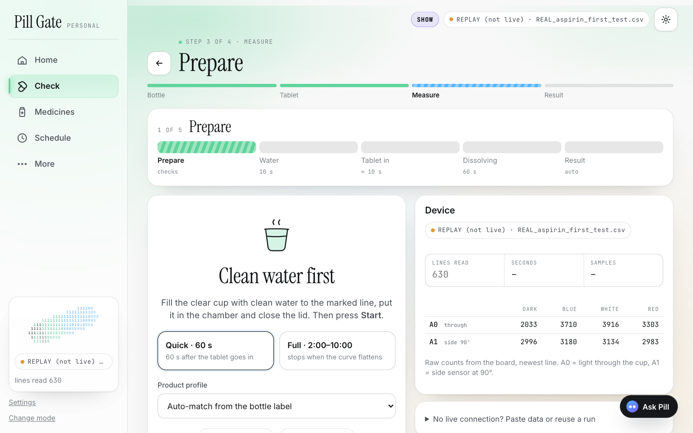
Measure. Prepare → clean water → tablet in → dissolving → result, with the live lines-read counter.
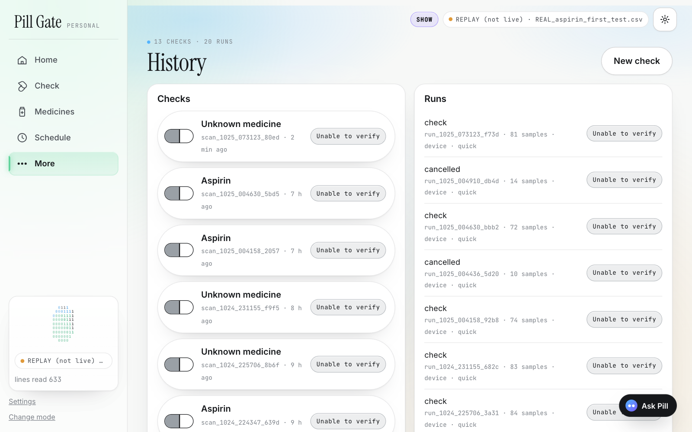
History. Every run with its answer, rule id and curve.
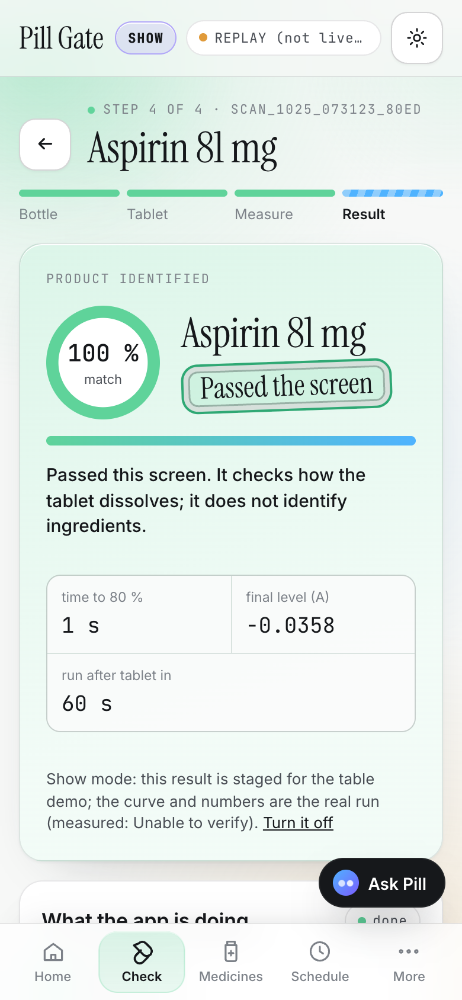
Phone result.
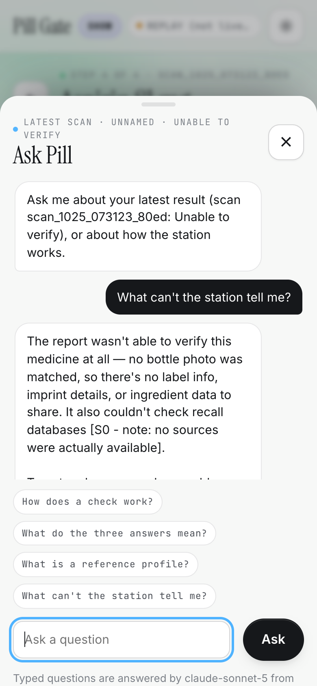
Ask Pill ("Why this answer?").
Personal mode: bigger text, recall status per bottle, read-aloud.localhost:8000 live · localhost:8001 replay
Pill
Clinic app: the verdict holds the payment
6 / 9
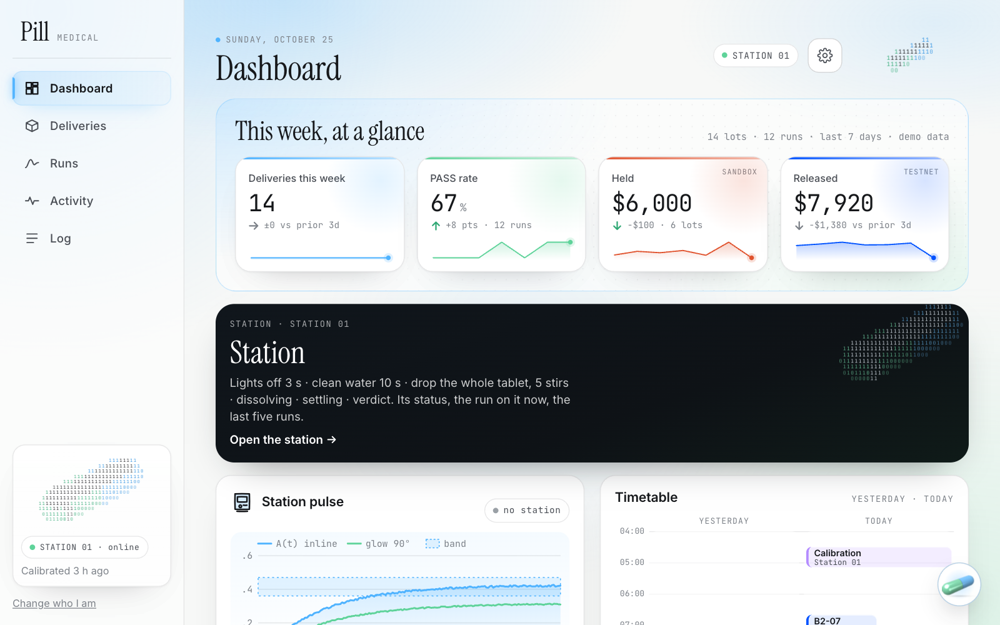
Dashboard. Deliveries, runs, money held, the day's decisions.
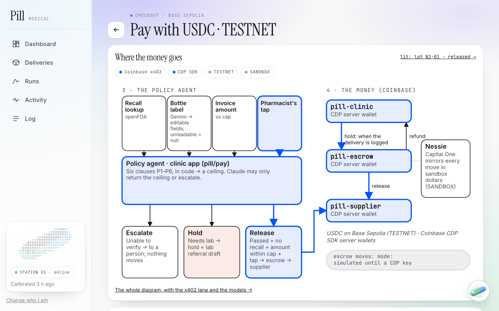
Release. Passed the screen + no recall + within the cap + the pharmacist's tap. Nothing moves without the tap.
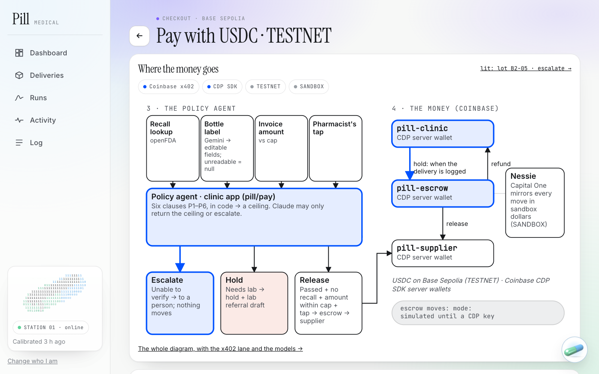
Escalate. Anything but a pass holds the money and quotes the policy clause (P1–P6) that fired.
Every decision is logged with the lot, the time, the rule and the clause. The model can only downgrade a decision.app.pillmeifyoucan.health/demo
Pill
How the money moves: Coinbase x402, CDP wallets, USDC on Base Sepolia (TESTNET)
7 / 9
The tree. Measure → three answers → the policy agent → three CDP server wallets (clinic pays in, escrow holds, supplier is paid). Under it, the x402 lane: POST /verify → 402 with the price → the buyer checks its 1 USDC / day cap and signs → facilitator verifies → 200 + verdict. Dashed = not yet run.
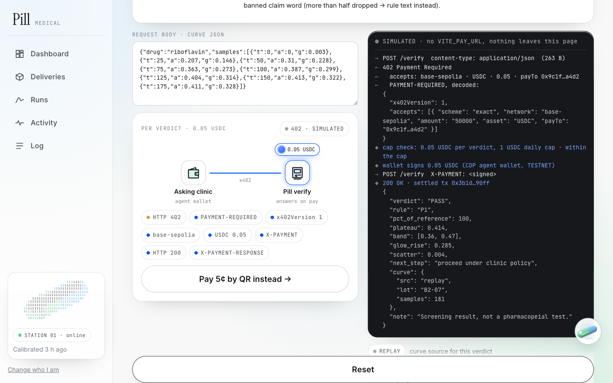
A real 402 today. 0.05 test USDC per verdict; the facilitator's verify step answered for real. The paid 200 is pending a CDP key.
Pay, buy, earn. Escrow → supplier in USDC; buy a verdict from another station for cents; every station sells /verify.
@x402/express · @x402/evm · CDP SDK (not the MCP). Everything is TESTNET and every screen says so.pillmeifyoucan.health/#coinbase
Pill
The website: pillmeifyoucan.health
8 / 9
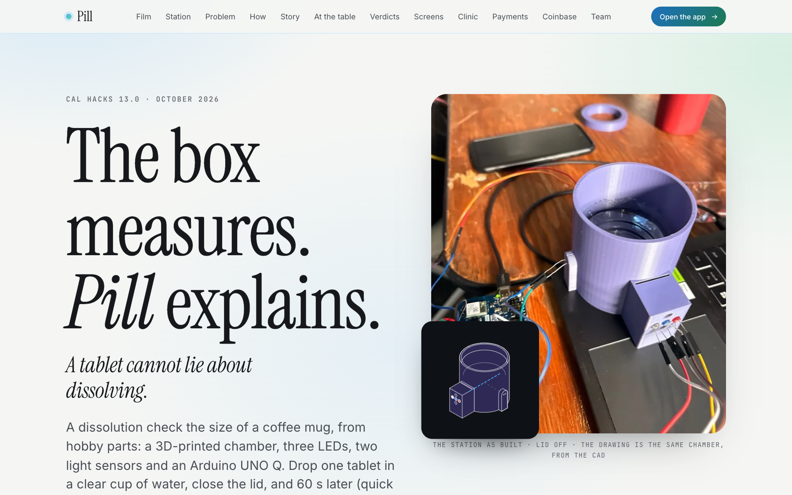
Hero. "The box measures. Pill explains."
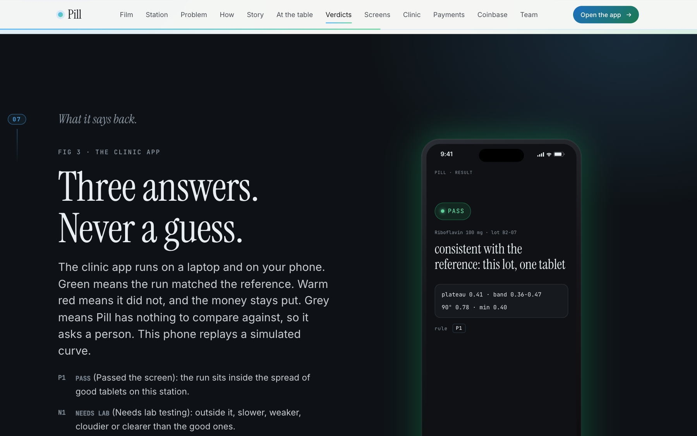
Three answers and what is real now (first aspirin run, no reference yet).
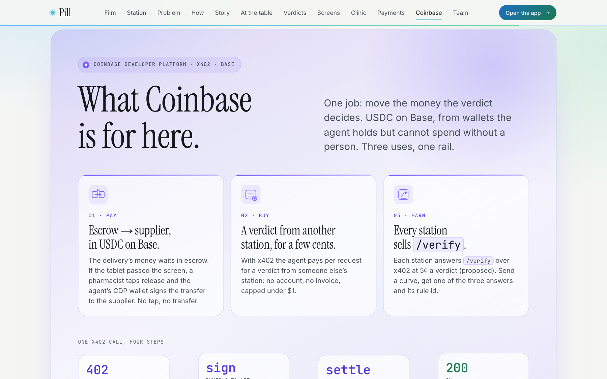
What Coinbase is for here. One x402 call in four steps; press Call /verify to replay 402 → sign → 200.
Vite + anime.js, a scroll-synced story, the station exploded view, blueprints, pricing calculator, limits page ("what it won't claim").Film at /#film · demo video youtube.com/watch?v=yXEmc25dfMw
Pill
Code first, then Figma from the code
9 / 9
Four stages, timed from git. Ideation with AI judge panels (≈255 min) → prototyping in code + Figma Make (≈65 min) → handoff → code generation.
This deck was generated from the repo. One JSON file → the HTML deck, the PDF, the PPTX, and a Figma plugin that draws the same JSON (tested against a stub of the Figma API).
What broke, and what it changed. The P6 hold rule, a double deploy, the REST API that can't draw, 8 of 27 tokens surviving the hand copy.
Deck in Figma Slides: figma.com/deck/xSmcPKdRTVgKI7XzGoqQ0R/pill-deck · stage log in figma/STAGE-LOG.mdThank you, Cal Hacks.